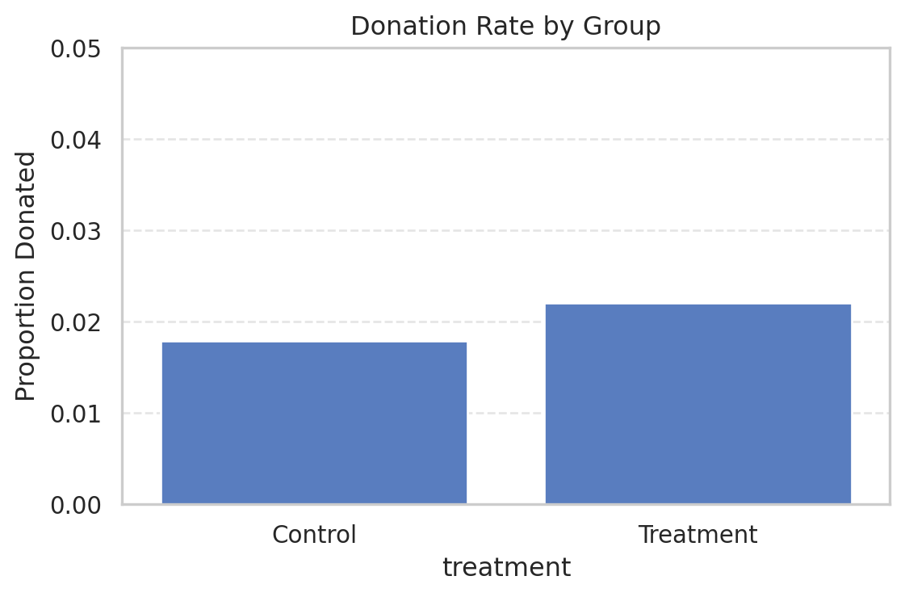
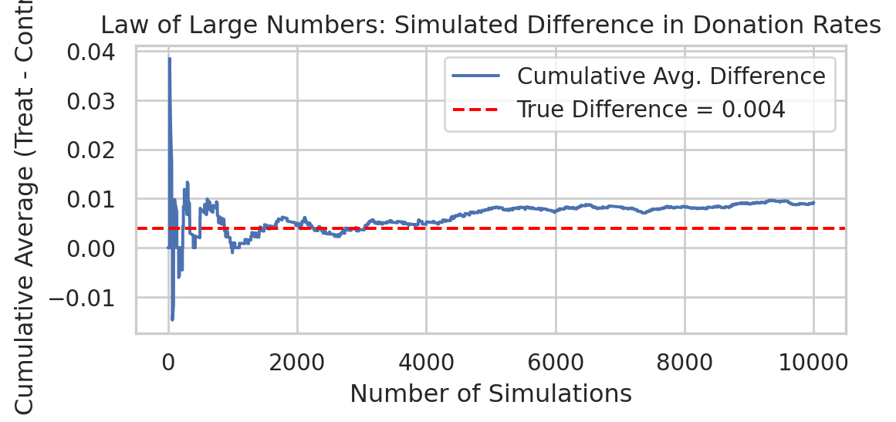

Dean Karlan at Yale and John List at the University of Chicago conducted a field experiment to test the effectiveness of different fundraising letters. They sent out 50,000 fundraising letters to potential donors, randomly assigning each letter to one of three treatments: a standard letter, a matching grant letter, or a challenge grant letter. They published the results of this experiment in the American Economic Review in 2007. The article and supporting data are available from the AEA website and from Innovations for Poverty Action as part of Harvard’s Dataverse.
In this article, the experiment conducted by Karlan and List (2007) is a large-scale natural field experiment designed to measure how different types of matching donation offers affect charitable giving behavior. The researchers partnered with a well-known nonprofit organization and mailed fundraising letters to over 50,000 prior donors.
The sample was randomly assigned to receive one of several types of letters: a standard fundraising letter (control group), or one that included a matching donation offer (treatment group). Within the treatment group, there was further random assignment to different match ratios (1:1, 2:1, or 3:1), different matching thresholds ($25,000, $50,000, $100,000, or unspecified), and different suggested donation amounts (equal to, 1.25x, or 1.5x the individual’s prior highest donation).
This experimental design allows the authors to identify not only the average treatment effect of offering a match, but also whether increasing the generosity or structure of the match (e.g., higher ratio or larger threshold) significantly affects donor behavior.
This project seeks to replicate their results.
Data
import pandas as pdimport pyrsm as rsmdata = pd.read_stata('karlan_list_2007.dta')data.head()data.describe()
treatment
control
ratio2
ratio3
size25
size50
size100
sizeno
askd1
askd2
...
redcty
bluecty
pwhite
pblack
page18_39
ave_hh_sz
median_hhincome
powner
psch_atlstba
pop_propurban
count
50083.000000
50083.000000
50083.000000
50083.000000
50083.000000
50083.000000
50083.000000
50083.000000
50083.000000
50083.000000
...
49978.000000
49978.000000
48217.000000
48047.000000
48217.000000
48221.000000
48209.000000
48214.000000
48215.000000
48217.000000
mean
0.666813
0.333187
0.222311
0.222211
0.166723
0.166623
0.166723
0.166743
0.222311
0.222291
...
0.510245
0.488715
0.819599
0.086710
0.321694
2.429012
54815.700533
0.669418
0.391661
0.871968
std
0.471357
0.471357
0.415803
0.415736
0.372732
0.372643
0.372732
0.372750
0.415803
0.415790
...
0.499900
0.499878
0.168560
0.135868
0.103039
0.378105
22027.316665
0.193405
0.186599
0.258633
min
0.000000
0.000000
0.000000
0.000000
0.000000
0.000000
0.000000
0.000000
0.000000
0.000000
...
0.000000
0.000000
0.009418
0.000000
0.000000
0.000000
5000.000000
0.000000
0.000000
0.000000
25%
0.000000
0.000000
0.000000
0.000000
0.000000
0.000000
0.000000
0.000000
0.000000
0.000000
...
0.000000
0.000000
0.755845
0.014729
0.258311
2.210000
39181.000000
0.560222
0.235647
0.884929
50%
1.000000
0.000000
0.000000
0.000000
0.000000
0.000000
0.000000
0.000000
0.000000
0.000000
...
1.000000
0.000000
0.872797
0.036554
0.305534
2.440000
50673.000000
0.712296
0.373744
1.000000
75%
1.000000
1.000000
0.000000
0.000000
0.000000
0.000000
0.000000
0.000000
0.000000
0.000000
...
1.000000
1.000000
0.938827
0.090882
0.369132
2.660000
66005.000000
0.816798
0.530036
1.000000
max
1.000000
1.000000
1.000000
1.000000
1.000000
1.000000
1.000000
1.000000
1.000000
1.000000
...
1.000000
1.000000
1.000000
0.989622
0.997544
5.270000
200001.000000
1.000000
1.000000
1.000000
8 rows × 48 columns
Description
Variable Definitions
Variable
Description
treatment
Treatment
control
Control
ratio
Match ratio
ratio2
2:1 match ratio
ratio3
3:1 match ratio
size
Match threshold
size25
$25,000 match threshold
size50
$50,000 match threshold
size100
$100,000 match threshold
sizeno
Unstated match threshold
ask
Suggested donation amount
askd1
Suggested donation was highest previous contribution
askd2
Suggested donation was 1.25 x highest previous contribution
askd3
Suggested donation was 1.50 x highest previous contribution
ask1
Highest previous contribution (for suggestion)
ask2
1.25 x highest previous contribution (for suggestion)
ask3
1.50 x highest previous contribution (for suggestion)
amount
Dollars given
gave
Gave anything
amountchange
Change in amount given
hpa
Highest previous contribution
ltmedmra
Small prior donor: last gift was less than median $35
freq
Number of prior donations
years
Number of years since initial donation
year5
At least 5 years since initial donation
mrm2
Number of months since last donation
dormant
Already donated in 2005
female
Female
couple
Couple
state50one
State tag: 1 for one observation of each of 50 states; 0 otherwise
nonlit
Nonlitigation
cases
Court cases from state in 2004-5 in which organization was involved
statecnt
Percent of sample from state
stateresponse
Proportion of sample from the state who gave
stateresponset
Proportion of treated sample from the state who gave
stateresponsec
Proportion of control sample from the state who gave
stateresponsetminc
stateresponset - stateresponsec
perbush
State vote share for Bush
close25
State vote share for Bush between 47.5% and 52.5%
red0
Red state
blue0
Blue state
redcty
Red county
bluecty
Blue county
pwhite
Proportion white within zip code
pblack
Proportion black within zip code
page18_39
Proportion age 18-39 within zip code
ave_hh_sz
Average household size within zip code
median_hhincome
Median household income within zip code
powner
Proportion house owner within zip code
psch_atlstba
Proportion who finished college within zip code
pop_propurban
Proportion of population urban within zip code
Balance Test
As an ad hoc test of the randomization mechanism, I provide a series of tests that compare aspects of the treatment and control groups to assess whether they are statistically significantly different from one another.
t-test for number of month since last donation variable
Pairwise mean comparisons (t-test)
Data : data
Variables : treat, mrm2
Samples : independent
Confidence: 0.95
Adjustment: None
treat mean n n_missing sd se me
control 12.998 16687 0 12.074 0.093 0.183
treatment 13.012 33395 1 12.086 0.066 0.130
Null hyp. Alt. hyp. diff p.value se t.value df 2.5% 97.5%
control = treatment control not equal to treatment -0.014 0.905 0.114 -0.12 33394.142 -0.238 0.211
Signif. codes: 0 '***' 0.001 '**' 0.01 '*' 0.05 '.' 0.1 ' ' 1
Linear Regression
lr = rsm.model.regress({'data':data},rvar='mrm2', evar='treatment')lr.summary(fit=False)
Linear regression (OLS)
Data : data
Response variable : mrm2
Explanatory variables: treatment
Null hyp.: the effect of x on mrm2 is zero
Alt. hyp.: the effect of x on mrm2 is not zero
coefficient std.error t.value p.value
Intercept 12.998 0.094 138.979 < .001 ***
treatment 0.014 0.115 0.119 0.905
Signif. codes: 0 '***' 0.001 '**' 0.01 '*' 0.05 '.' 0.1 ' ' 1
We can see from the results that the p value is 0.905, which is larger than 0.05, showing that the difference between treatment group and control group on number of month since last donation is not statistically significant. Therefroe, the data assignment is balanced.
Pairwise mean comparisons (t-test)
Data : data
Variables : treat, hpa
Samples : independent
Confidence: 0.95
Adjustment: None
treat mean n n_missing sd se me
control 58.959999 16687 0 67.270 0.521 1.021
treatment 59.597000 33396 0 73.059 0.400 0.784
Null hyp. Alt. hyp. diff p.value se t.value df 2.5% 97.5%
control = treatment control not equal to treatment -0.637 0.332 0.656 -0.97 35916.716 -1.924 0.65
Signif. codes: 0 '***' 0.001 '**' 0.01 '*' 0.05 '.' 0.1 ' ' 1
Linear Regression
lr = rsm.model.regress({'data':data},rvar='hpa', evar='treatment')lr.summary(fit=False)
Linear regression (OLS)
Data : data
Response variable : hpa
Explanatory variables: treatment
Null hyp.: the effect of x on hpa is zero
Alt. hyp.: the effect of x on hpa is not zero
coefficient std.error t.value p.value
Intercept 58.960 0.551 107.005 < .001 ***
treatment 0.637 0.675 0.944 0.345
Signif. codes: 0 '***' 0.001 '**' 0.01 '*' 0.05 '.' 0.1 ' ' 1
We compared hpa (highest previous contribution) between treatment and control groups using both a t-test and a linear regression.
The t-test yields a p-value of 0.332, while the OLS regression produces a p-value of 0.345. The results are nearly identical and both indicate that the difference is not statistically significant at the 5% level. This further supports that the two groups are balanced in terms of historical donation behavior.
Pairwise mean comparisons (t-test)
Data : data
Variables : treat, freq
Samples : independent
Confidence: 0.95
Adjustment: None
treat mean n n_missing sd se me
control 8.047 16687 0 11.404 0.088 0.173
treatment 8.035 33396 0 11.390 0.062 0.122
Null hyp. Alt. hyp. diff p.value se t.value df 2.5% 97.5%
control = treatment control not equal to treatment 0.012 0.912 0.108 0.111 33326.354 -0.2 0.224
Signif. codes: 0 '***' 0.001 '**' 0.01 '*' 0.05 '.' 0.1 ' ' 1
Linear Regression
lr = rsm.model.regress({'data':data},rvar='freq', evar='treatment')lr.summary(fit=False)
Linear regression (OLS)
Data : data
Response variable : freq
Explanatory variables: treatment
Null hyp.: the effect of x on freq is zero
Alt. hyp.: the effect of x on freq is not zero
coefficient std.error t.value p.value
Intercept 8.047 0.088 91.231 < .001 ***
treatment -0.012 0.108 -0.111 0.912
Signif. codes: 0 '***' 0.001 '**' 0.01 '*' 0.05 '.' 0.1 ' ' 1
Both t-test and linear regression shows a p-value of 0.912, which is larger than 0.05. This shows that the difference is not statistically significant at the 5% level and therefore the two grpups are balanced in terms of number of prior donations.
Comments: The t-tests and linear regressions conducted on pre-treatment variables such as hpa, mrm2 and freq show no statistically significant differences between the treatment and control groups. This indicates that the randomization procedure was successful.
This mirrors the role of Table 1 in the original paper by Karlan & List (2007), which presents balance checks on baseline variables to demonstrate that the groups are comparable prior to treatment.
Establishing balance is essential to ensure that any observed differences in donation behavior can be credibly attributed to the experimental manipulation, rather than to underlying differences in donor characteristics.
Experimental Results
Charitable Contribution Made
First, I analyze whether matched donations lead to an increased response rate of making a donation.
import matplotlib.pyplot as pltimport seaborn as snssns.set(style="whitegrid", palette="muted")plt.figure(figsize=(6, 4))sns.barplot( data=data, x="treatment", y="gave", errorbar=None)plt.xticks([0, 1], ["Control", "Treatment"])plt.ylabel("Proportion Donated")plt.title("Donation Rate by Group")plt.ylim(0, 0.05)plt.grid(axis="y", linestyle="--", alpha=0.5)plt.tight_layout()plt.show()

t-test
Next, I perform a t-test for the donation between two groups.
Pairwise mean comparisons (t-test)
Data : data
Variables : treat, gave
Samples : independent
Confidence: 0.95
Adjustment: None
treat mean n n_missing sd se me
control 0.018 16687 0 0.132 0.001 0.002
treatment 0.022 33396 0 0.147 0.001 0.002
Null hyp. Alt. hyp. diff p.value se t.value df 2.5% 97.5%
control = treatment control not equal to treatment -0.004 0.001 0.001 -3.209 36576.842 -0.007 -0.002 **
Signif. codes: 0 '***' 0.001 '**' 0.01 '*' 0.05 '.' 0.1 ' ' 1
From the results, we can see that the p value is 0.001, which shows that there are significant difference of the donation between control and treatment group at 5% level.
Bivariate linear regression
Here, we run a bivariate linear regression to show the same finding.
lr = rsm.model.regress({'data':data}, rvar ='gave', evar ='treat')lr.summary(fit=False)
Linear regression (OLS)
Data : data
Response variable : gave
Explanatory variables: treat
Null hyp.: the effect of x on gave is zero
Alt. hyp.: the effect of x on gave is not zero
coefficient std.error t.value p.value
Intercept 0.018 0.001 16.225 < .001 ***
treat[treatment] 0.004 0.001 3.101 0.002 **
Signif. codes: 0 '***' 0.001 '**' 0.01 '*' 0.05 '.' 0.1 ' ' 1
The matching treatment significantly increased the likelihood of donating. The average difference was around 0.4 percentage points, and the result is statistically significant (p < 0.05). This confirms that people are more inclined to give when they know their donation will be matched by another donor. This behavior suggests a form of social influence or perceived multiplier effect, as highlighted in Karlan & List (2007).
Probit regression
Finally, I perform a probit regression
import statsmodels.api as smimport statsmodels.formula.api as smfmodel = smf.probit("gave ~ treatment", data=data).fit()print(model.summary())
We use a probit model to estimate the effect of the matching gift treatment on the likelihood of donating. In this model, the outcome variable gave is binary, taking the value 1 if a donation was made and 0 otherwise.
The coefficient on the treatment variable is 0.087, which is statistically significant at the 5% level (p = 0.002). While probit coefficients do not have a direct probability interpretation, the positive and significant effect indicates that the treatment increased the underlying donation propensity. In substantive terms, this means that receiving a matching gift offer made people more likely to donate.
This result aligns with the findings in Table 3 of Karlan and List (2007), and supports the hypothesis that even simple fundraising message frames—such as the inclusion of a match—can meaningfully shift charitable behavior.
Differences between Match Rates
Next, I assess the effectiveness of different sizes of matched donations on the response rate.
t-test for 2:1 and 1:1 match
Firstly, I assess the difference of donation rate between 2:1 match and 1:1 match
Pairwise mean comparisons (t-test)
Data : data
Variables : ratio, gave
Samples : independent
Confidence: 0.95
Adjustment: None
ratio mean n n_missing sd se me
1 0.021 11133 0 0.143 0.001 0.003
2 0.023 11134 0 0.149 0.001 0.003
Null hyp. Alt. hyp. diff p.value se t.value df 2.5% 97.5%
1 = 2 1 not equal to 2 -0.002 0.335 0.002 -0.965 22225.078 -0.006 0.002
Signif. codes: 0 '***' 0.001 '**' 0.01 '*' 0.05 '.' 0.1 ' ' 1
From the results, we can see that the mean donation rate is 0.021 and 0.023 for 1:1 match and 2:1 match. However, the p-value is 0.335, which is larger than 0.05. This suggests that there is no significant difference between the donation rate of 1:1 match and 2:1 match
t-test for 3:1 and 1:1 match
Secondly, I assess the difference of donation rate between 3:1 match and 1:1 match
Pairwise mean comparisons (t-test)
Data : data
Variables : ratio, gave
Samples : independent
Confidence: 0.95
Adjustment: None
ratio mean n n_missing sd se me
1 0.021 11133 0 0.143 0.001 0.003
3 0.023 11129 0 0.149 0.001 0.003
Null hyp. Alt. hyp. diff p.value se t.value df 2.5% 97.5%
1 = 3 1 not equal to 3 -0.002 0.31 0.002 -1.015 22215.053 -0.006 0.002
Signif. codes: 0 '***' 0.001 '**' 0.01 '*' 0.05 '.' 0.1 ' ' 1
From the results, we can see that the mean donation rate is 0.021 and 0.023 for 1:1 match and 3:1 match. However, the p-value is 0.31, which is larger than 0.05. This suggests that there is no significant difference between the donation rate of 1:1 match and 3:1 match
t-test for 3:1 and 2:1 match
Finally, I assess the difference of donation rate between 3:1 match and 2:1 match
Pairwise mean comparisons (t-test)
Data : data
Variables : ratio, gave
Samples : independent
Confidence: 0.95
Adjustment: None
ratio mean n n_missing sd se me
2 0.023 11134 0 0.149 0.001 0.003
3 0.023 11129 0 0.149 0.001 0.003
Null hyp. Alt. hyp. diff p.value se t.value df 2.5% 97.5%
2 = 3 2 not equal to 3 -0.0 0.96 0.002 -0.05 22260.849 -0.004 0.004
Signif. codes: 0 '***' 0.001 '**' 0.01 '*' 0.05 '.' 0.1 ' ' 1
From the results, we can see that the mean donation rate is 0.023 and 0.023 for 2:1 match and 3:1 match. However, the p-value is 0.96, which is larger than 0.05. This suggests that there is no significant difference between the donation rate of 2:1 match and 3:1 match
In conclusion, the results of these t-test support the authors comments that ‘the match threshold does not had a meaningful influence on behavior.’
Regression analysis
Alternatively, I assess the same issue using a regression method
Linear regression (OLS)
Data : data
Response variable : gave
Explanatory variables: ratio
Null hyp.: the effect of x on gave is zero
Alt. hyp.: the effect of x on gave is not zero
coefficient std.error t.value p.value
Intercept 0.021 0.001 14.912 < .001 ***
ratio[2] 0.002 0.002 0.958 0.338
ratio[3] 0.002 0.002 1.008 0.313
Signif. codes: 0 '***' 0.001 '**' 0.01 '*' 0.05 '.' 0.1 ' ' 1
We estimate a linear regression to compare the donation rates across different match ratios. The baseline group is the 1:1 match. The coefficients on the 2:1 and 3:1 match levels are both positive (0.002), suggesting slightly higher donation rates compared to the 1:1 group.
However, both coefficients are not statistically significant (p > 0.3), indicating that these differences are likely due to random chance. These findings align with the main result in Karlan & List (2007): increasing the match ratio does not significantly increase the likelihood of donation.
Response rate difference
Here, we calculate the response rate difference between three match groups
We compute the difference in donation rates across match ratios directly from the data.
The donation rate increases slightly from the 1:1 match group to the 2:1 match group, with a difference of 0.19 percentage points. However, the increase from 2:1 to 3:1 is almost zero (0.01 percentage points). These marginal differences are extremely small and not statistically meaningful.
This suggests that while the presence of a match offer increases donation probability, increasing the match ratio beyond 1:1 offers no additional benefit in terms of donor participation. This finding is consistent with the conclusions in Karlan & List (2007).
From the coefficients of the previous regression, we can see that the results closely mirror the direct comparisons of donation rates. The 2:1 group has a slightly higher donation rate than the 1:1 group, but the difference is small (about 0.002) and statistically insignificant (p > 0.3). The difference between 3:1 and 2:1 is nearly zero.
These findings confirm that more generous match ratios do not lead to meaningfully higher response rates, consistent with the main conclusion of Karlan & List (2007). A basic 1:1 match is sufficient to activate the behavioral response.
Size of Charitable Contribution
In this subsection, I analyze the effect of the size of matched donation on the size of the charitable contribution.
Pairwise mean comparisons (t-test)
Data : data
Variables : treat, amount
Samples : independent
Confidence: 0.95
Adjustment: None
treat mean n n_missing sd se me
control 0.813 16687 0 8.177 0.063 0.124
treatment 0.967 33396 0 8.963 0.049 0.096
Null hyp. Alt. hyp. diff p.value
control = treatment control not equal to treatment -0.154 0.055 .
Signif. codes: 0 '***' 0.001 '**' 0.01 '*' 0.05 '.' 0.1 ' ' 1
We compare the average donation amounts between the treatment and control groups using a t-test. The treatment group donated an average of $0.967 per person, while the control group gave $0.813, yielding a difference of $0.154.
Although the p-value of 0.055 does not meet the conventional 5% significance threshold, it is below 0.1, suggesting a marginally significant effect. This result indicates that offering a matching donation may increase the average amount given — though the evidence is somewhat weak for this particular outcome.
t-test for those who made donations
Next, I analyze the effect of the size of matched donation on the size of the charitable contribution for those who make actual donation
Pairwise mean comparisons (t-test)
Data : donate_group
Variables : treat, amount
Samples : independent
Confidence: 0.95
Adjustment: None
treat mean n n_missing sd se me
control 45.540001 298 0 41.380 2.397 4.717
treatment 43.872002 736 0 42.016 1.549 3.040
Null hyp. Alt. hyp. diff p.value
control = treatment control not equal to treatment 1.668 0.559
Signif. codes: 0 '***' 0.001 '**' 0.01 '*' 0.05 '.' 0.1 ' ' 1
We limit the sample to individuals who donated (i.e., gave == 1) and analyze whether the treatment affected how much they gave.
The average donation in the control group was $45.54, compared to $43.87 in the treatment group — a difference of $1.67. However, this difference is not statistically significant (p = 0.559), as confirmed by the t-test.
This suggests that while matching may increase the likelihood of giving, they do not appear to increase the donation amount among those who already decide to give. In other words, the treatment influences the extensive margin (whether to give), but not the intensive margin (how much to give).
Furthermore, the treatment factor does not have a strong causal interpretation, because conditional-on-giving is a post-treatment selection. That is, once we restrict the sample to givers, we may violate random assignment — the treatment and control groups are no longer comparable within this restricted sample.
The histograms show the distribution of donation amounts among those who gave, separated by treatment assignment.
Simulation Experiment
As a reminder of how the t-statistic “works,” in this section I use simulation to demonstrate the Law of Large Numbers and the Central Limit Theorem.
Suppose the true distribution of respondents who do not get a charitable donation match is Bernoulli with probability p=0.018 that a donation is made.
Further suppose that the true distribution of respondents who do get a charitable donation match of any size is Bernoulli with probability p=0.022 that a donation is made.
Law of Large Numbers
import numpy as npimport matplotlib.pyplot as pltn =10000p_control =0.018p_treat =0.022true_diff = p_treat - p_controlnp.random.seed(1234)control_draws = np.random.binomial(1, p_control, n)treat_draws = np.random.binomial(1, p_treat, n)differences = treat_draws - control_drawscumulative_avg = np.cumsum(differences) / np.arange(1, n+1)plt.figure(figsize=(6, 3))plt.plot(cumulative_avg, label="Cumulative Avg. Difference")plt.axhline(true_diff, color="red", linestyle="--", label="True Difference = 0.004")plt.xlabel("Number of Simulations")plt.ylabel("Cumulative Average (Treat - Control)")plt.title("Law of Large Numbers: Simulated Difference in Donation Rates")plt.legend()plt.grid(True)plt.tight_layout()plt.show()

The plot shows the cumulative average of 10,000 simulated differences in donation outcomes between treatment and control groups. Each simulation randomly draws a Bernoulli trial from the two true distributions: 2.2% for treatment and 1.8% for control.
Early on, the cumulative difference is volatile due to small sample size. But as the number of simulations increases, the average stabilizes and converges to the true difference of 0.004 (indicated by the red dashed line), demonstrating the Law of Large Numbers in action.
This supports the idea that with enough random samples, our empirical average will approximate the true population-level difference.
Central Limit Theorem
Each of the four plots below shows the distribution of 1000 simulated differences in donation rates between treatment and control groups, at different sample sizes (50, 200, 500, 1000). As sample size increases, the distribution becomes narrower and more centered around the true difference of 0.004, illustrating the Central Limit Theorem in practice.
sns.set(style="whitegrid")p_control =0.018p_treat =0.022reps =1000sample_sizes = [50, 200, 500, 1000]np.random.seed(1234)for n in sample_sizes: diffs = []for _ inrange(reps): c = np.random.binomial(1, p_control, n) t = np.random.binomial(1, p_treat, n) diff = t.mean() - c.mean() diffs.append(diff) plt.figure(figsize=(6, 4)) sns.histplot(diffs, bins=30, kde=False, color="lightblue") plt.axvline(0, color="black", linestyle="--", label="Zero") plt.axvline(0.004, color="red", linestyle="--", label="True Diff = 0.004") plt.title(f"Distribution of Mean Differences (Sample Size = {n})") plt.xlabel("Treatment Mean - Control Mean") plt.ylabel("Frequency") plt.legend() plt.tight_layout() plt.show()